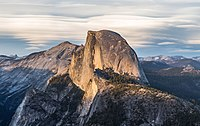
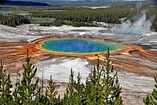

National Parks I have visited
| Name |
Location |
Name |
Location |
Name |
Location |
| Arches |
Utah |
Bryce Canyon |
Utah |
Canyonlands |
Utah |
| Capitol Reef |
Utah |
Carlsbad Caverns |
New Mexico |
Congaree |
South Carolina |
| Crater Lake |
Oregon |
Grand Canyon |
Arizona |
Grand Teton |
Wyoming |
| Great Sand Dunes |
Colorado |
Guadalupe Mountains |
Texas |
Joshua Tree |
California |
| Mount Rainier |
Washington |
North Cascades |
Washington |
Olympic |
Washington |
| Petrified Forest |
Arizona |
Redwood |
California |
Rocky Mountain |
Colorado |
| Shenandoah |
Virginia |
White Sands |
New Mexico |
Yellowstone |
Wyoming, Montana, Idaho |
| Yosemite |
California |
Zion |
Utah |
|
|
My TOP 3 Favorite National Parks
- Yellowstone National Park
- Yosemite National Park
- Grand Canyon National Park
 The Grand Canyon, carved by the mighty Colorado River,
is 277 miles (446 km) long, up to 1 mile (1.6 km) deep, and up to 15 miles (24 km) wide.
Millions of years of erosion have resulted in a massive three-tiered canyon,
exposing the multicolored layers of the Colorado Plateau in mesas and canyon walls,
visible from trails that descend into the canyon from the north and south rims.
The Grand Canyon, carved by the mighty Colorado River,
is 277 miles (446 km) long, up to 1 mile (1.6 km) deep, and up to 15 miles (24 km) wide.
Millions of years of erosion have resulted in a massive three-tiered canyon,
exposing the multicolored layers of the Colorado Plateau in mesas and canyon walls,
visible from trails that descend into the canyon from the north and south rims.

Yosemite features sheer granite cliffs, exceptionally tall waterfalls, and old-growth forests at a unique
intersection of geology and hydrology. Half Dome and El Capitan rise from the park's centerpiece,
the glacier-carved Yosemite Valley, and from its vertical walls drop Yosemite Falls,
one of North America's tallest waterfalls at 2,425 feet (739 m) high. Three giant sequoia groves,
along with a pristine wilderness in the heart of the Sierra Nevada, are home to a wide variety of rare plant and animal species.
Situated on the Yellowstone Caldera, the park has an expansive network of geothermal
areas including boiling mud pots, vividly colored hot springs such as Grand Prismatic Spring, and regularly erupting geysers,
the best-known being Old Faithful. The yellow-hued Grand Canyon of the Yellowstone River contains several high waterfalls,
and four mountain ranges traverse the park. More than 60 mammal species including timber wolves, grizzly bears, black bears,
lynxes, bison, and elk make this park one of the best wildlife viewing spots in the country.
Subscribe for more information